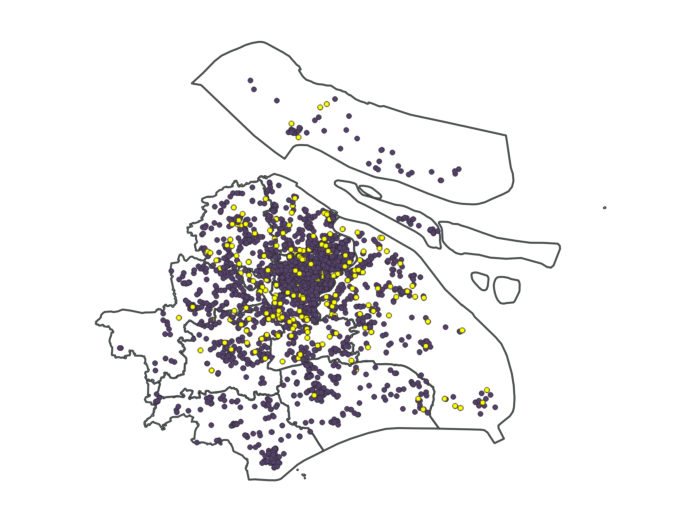

Lab 04 · October 2026
Entry 4: Shanghai COVID-19 Mental Health Survey
The question
Of the COVID-19 respondents in Shanghai, how many are located per district?
The data
Files: LAB04_shanghai-lockdown-survey.csv (田林, 康桥镇, 川沙新镇) and LAB04_shanghai-districts.geojson (from DataV.GeoAtlas)
Source: Text formats, Class Brightspace page files, Retrieved on 10/16/2026
When the Survey file was set to UTF-8, characters became nonsense. The file needed to be set to an encoding of GB18030, which represents a Chinese national character standard on Windows. However, 533 of these rows read as 空, or Chinese for “empty”. There is no data with geometry attributed to it, so only 2795 out of 3348 respondents are accounted for.
The Boundaries file does not carry a license statement nor an accuracy figure and contact information. The original survey contained sensitive identifiable health information in the form of street addresses of most respondents, which was removed in this version of the file.
The method
Coordinate Reference System: Project was set to EPSG:32651 or WGS 84 UTM Zone 51N.
Raster Grid Extent: A 135km by 135km zone defined by: 295000, 430000, 3393000, 3528000 [EPSG:32651]. Field for burn-in value was survey_code. Four sizes in georeferenced units were: 1000m, 250m, 100m, 30m, inputted into Horizontal and Vertical resolutions. Data was outputted to Bytes format.
Algorithms used include: area($geometry), perimeter($geometry), joining 1-to-1 attributes by location [by first matching feature, joining within, if(to_int("District") != "survey_code", 1, 0)], basic statistics for fields, rasterize vector to raster [survey_code, georeferenced units, byte output], simplify [Douglas-Peucker distance]

What I found
"Areas measured planar in EPSG:32651 (WGS 84 / UTM 51N),
which departs from the ellipsoidal area by under 0.03 per cent
at this latitude. Gridded areas were computed by cell count
on a 30 m grid with origin 295000, 3528000; shifting that
origin by half a cell moves a small district by several
per cent, so gridded figures are reported to no better
than the nearest per cent."
This lab shows the discrepancy between file resolution vs feature size. Block shapes and area boundaries get approximated to the lowest resolution the raster is set to. On the display, features that are smaller than it are removed, so the only objects visible are that of the minimum cell size. Summing these values however, produces a net zero effect, as an underestimate of one area usually means a neighboring area gets overestimated. Areas calculated also depend on the extent and grid formatting of the raster. A shifted grid, even at the same cell size, shifts boundaries and bands and outputs a different area figure altogether. Raster cell sizes can also affect the local file size and storage. Within the same area, more information is communicated in the fact that there are more smaller individual cells, for a factor of 4x the file size. Compressing these sizes can be efficient, depending on whether the file holds many rows of redundant information. All these possible discrepancies highlight the importance of a sensitivity check on the data formatting and what is below in the actual grid.
What this does not show
Within the file, there exists a few inconsistent limitations. First, 533 respondents have no coordinate location attached to them, and read as empty data. This means 16.5% out of the 3348 respondents in the CSV file are excluded as having no coordinates. On the other hand, another error occurs from the mismatching of the survey coordinates to the boundaries. Around 245 people ended up mislocated in a different district than their record. Eleven respondents are mistakenly given the same location because the software concludes a default “dead center” at People’s Park when it cannot decode a respondent address. 8.8% of the file is inconsistent in location and address matching, and cannot be seen until a spatial join operation is run. These internal inconsistencies also extend to perimeter boundaries. The raster format allows for around 600m boundary resolution, and the software falsely approximates to a precision of 6 decimal places, more significant figures than what is true.
AI use: No AI tools were used for this entry.